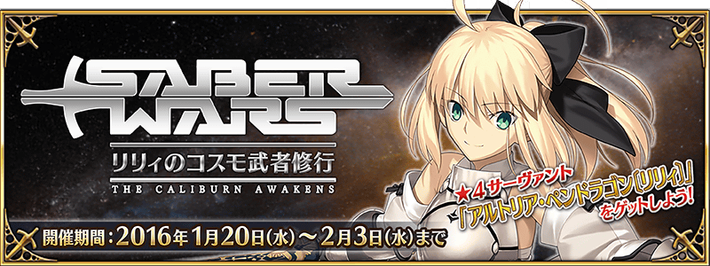
時間是2016年，正值人理繼續紛爭之際。
短暫的和平來到共和國跟帝國軍都不存在的迦爾帝亞。
就在那時，突然從宇宙出現神秘的地球外生命體。
外星人的目的為何？阿爾托莉姆(Artorium)又是什麼？
所屬於寶具不成長同盟的Saber Lily，她的壯烈修行就此展開。
◆活動舉辦期間◆
2016年1月20日（三）15：00～2月3日（三）12：59(台灣時間)
※開始時間做了變更。(1/19修正)
◆活動概要◆
來自奈須きのこ的完全原創故事，舉辦期間限定活動「Saber Wars ～Lily的宇宙武者修行～」！
在迦爾帝亞突然出現的神秘地球外生命體。
作為Master，你能見證到阿爾托莉亞・潘德拉剛〔Lily〕的成長嗎？
透過參加本活動的任務，收集活動道具來得到★4(SR)Servant「阿爾托莉亞・潘德拉剛〔Lily〕」！
在期間限定活動「Saber Wars～Lily的宇宙武者修行～」追加任務！
◆任務追加時間◆
2016年1月21日（四）15：30～
◆追加任務◆
モンスター襲来！ I
モンスター襲来！ II
モンスター襲来！ III
※15：30以後，由於任務的資料更新會有暫時跳到標題畫面的情況。
※在1/21 15:30時沒通過episode任務的話，須通過上述「追加任務」，相關任務才會開放。
※若已經通過episode任務，再通過「追加任務」的話，相關任務也不會再次開放。
※若1/21 15:30以前顯示的episode任務不會顯示，須通過上述「追加任務」後才會再次顯示。br>
※若顯示「資料已經更新。下載後，將跳到標題畫面。」或「此任務未開放。」的錯誤，請跳回標題畫面一次，再次啟動，任務就會顯示。
（1/21追記）
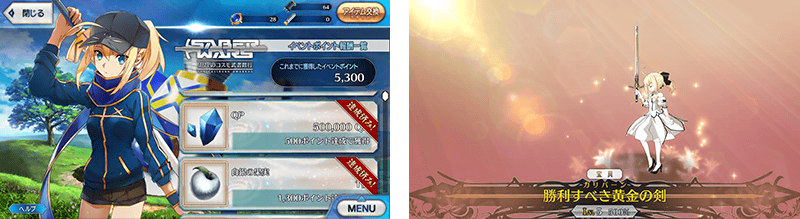
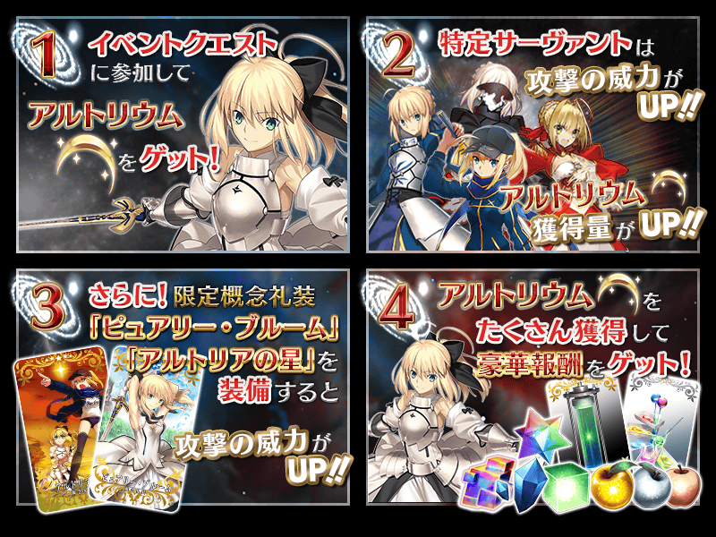
◆實用攻略方法・其1◆
對象Servant在這次活動任務的攻擊威力會提升！更會讓活動點數「阿爾托莉姆」的獲得量增加！
【對象Servant】
阿提拉、阿爾托莉亞・潘德拉剛、阿爾托莉亞・潘德拉剛〔Alter〕（Saber）、阿爾托莉亞・潘德拉剛〔Lily〕、沖田總司 、蓋烏斯・尤利烏斯・凱撒、齊格飛、吉爾・德・雷（Saber）、夏爾・德翁、謎之女主角X、尼祿・克勞狄烏斯、弗格斯・馬克・羅伊、莫德雷德
※各Servant的增加數不同。
◆實用攻略方法・其2◆
裝備活動限定概念禮裝和期間限定概念禮裝的話，活動專用道具「シンクウカーン」「バンノウレンズ」「トランＧスター」的獲得數會增加以及在活動任務的攻擊威力會提升！
※請注意在各任務的道具掉落率並非100%。
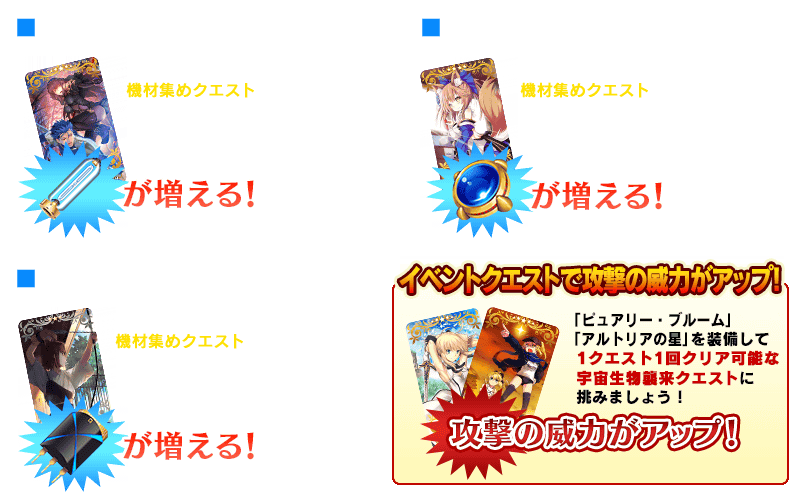
| 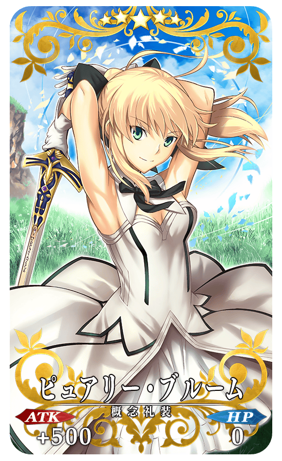 |
★★★★★SSR ピュアリー・ブルーム ATK 500（最大：2000） HP 0（最大：0） 技能 自身的寶具威力每回合提升5%（最大40%）＆自身在Saber Wars的攻擊威力提升100%【『Saber Wars』活動期間限定】 |
| 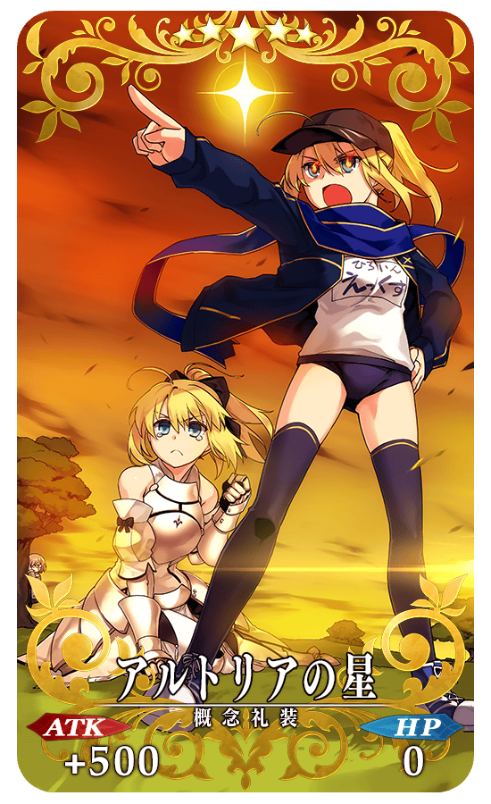 |
★★★★★SSR アルトリアの星 ATK 500（最大：2000） HP 0（最大：0） 技能 對自身賦予根性狀態＆弱體耐性提升5%＆我方全體在Saber Wars的攻擊威力提升50%【『Saber Wars』活動期間限定】 |
◆能以阿爾托莉姆獲得的道具◆
| 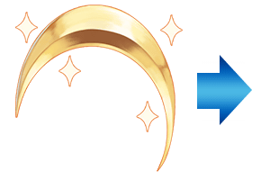 |
【Servant】 ★4（SR）「阿爾托莉亞・潘德拉剛〔Lily〕」 【活動限定概念禮裝】 ★5（SSR）概念禮裝「アルトリアの星」 ★5（SSR）概念禮裝「ピュアリー・ブルーム」 ★4（SR）概念禮裝「概念禮裝EXP卡：謎の物質α」 ★3（R）概念禮裝「概念禮裝EXP卡：謎の物質β」 【靈基再臨素材】 【其他道具】 |
◆報酬獲得方法◆
阿爾托莉姆每達到一定數以上，任務結束時自動進行報酬獲得。
能獲得的報酬名單，可以在ターミナル出現的按鈕開啟「活動報酬畫面」確認。
◆交換方法◆
交換期間：2/10（三）12：59
※交換期間結束後，「シンクウカーン」「バンノウレンズ」「トランＧスター」會消失。
從達文西工房内的「活動道具交換」，以收集來的活動專用道具來交換以下的道具。
◆能以シンクウカーン交換的道具◆
| 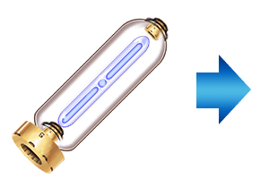 |
【活動限定概念禮裝】 ★5（SSR）「ピュアリー・ブルーム」 【靈基再臨素材】 |
◆能以バンノウレンズ交換的道具◆
| 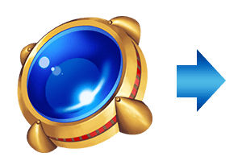 |
【活動限定概念禮裝】 ★5（SSR）「ピュアリー・ブルーム」 【靈基再臨素材】 |
◆能以トランＧスター交換的道具◆
| 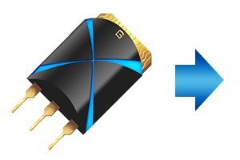 |
【活動限定概念禮裝】 ★5（SSR）「ピュアリー・ブルーム」 【靈基再臨素材】 【各種卡片】 |
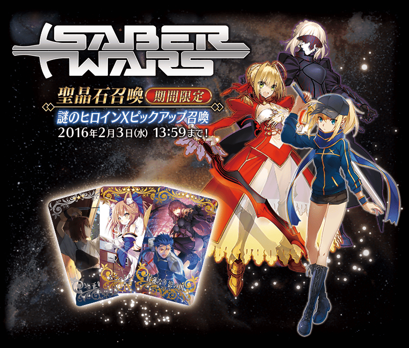
◆謎之女主角X Pick Up召喚期間◆
期間：2016年1月20日（三）16：00～2月3日（三）12：59
以期間限定舉辦謎之女主角X Pick Up召喚！
初登場的Servant「★5（SSR）謎之女主角X」以期間限定登場！
另外，「★4（SR）尼祿・克勞狄烏斯」、 「★4（SR）阿爾托莉亞・潘德拉剛〔Alter〕」的出現率提升！對象Servant在這次活動任務的攻擊威力提升！並增加阿爾托莉姆獲得量！
※謎之女主角X在PickUp召喚期間結束後，不會追加到故事召喚。
裝備期間限定概念禮裝「★5（SSR）紅蓮なり影の国」、「★4（SR）みこっと！花嫁修業」、「★3（R）正射必中」，活動專用道具的獲得數也會提升。
在Pick Up期間中，期間限定Servant、期間限定概念禮裝、2位Pick Up Servant的出現機率提升！
10次召喚★4(SR)以上1枚確定和★3(R)以上的Servant1位確定！
※★4(SR)以上確定包含Servant和概念禮裝。
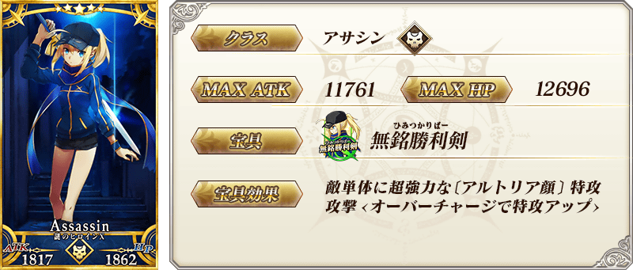
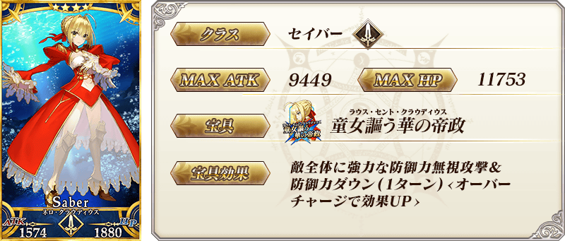

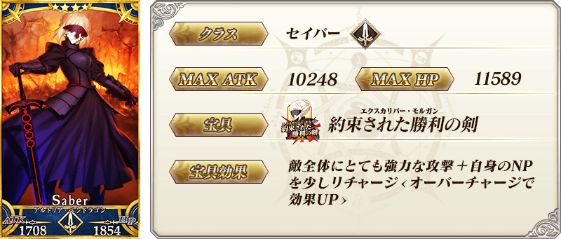
| 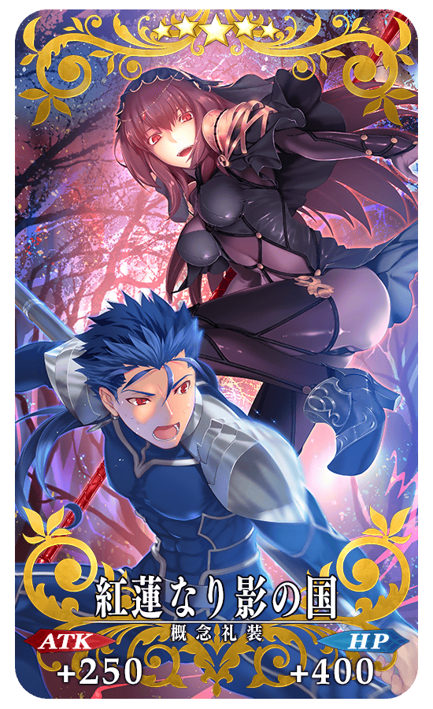 |
★★★★★SSR 紅蓮なり影の国 ATK 250（最大：1000） HP 400（最大：1600） 技能 對自身賦予傷害加成狀態（每回合效果提升・最大＋1000）＆シンクウカーン的掉落獲得數增加1個【『Saber Wars』活動期間限定】 |
| 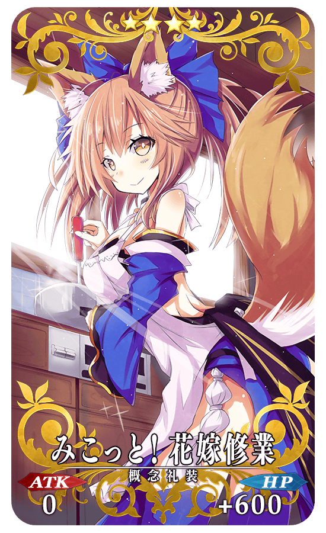 |
★★★★SR みこっと！花嫁修業 ATK 0（最大：0） HP 600（最大：2250） 技能 對自身賦予每回合以機率HP750回復狀態＆バンノウレンズ的掉落獲得數增加1個【『Saber Wars』活動期間限定】 |
| 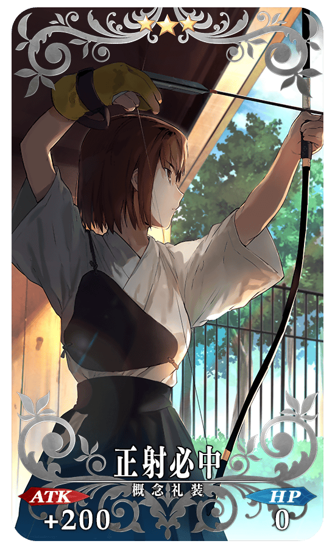 |
★★★R 正射必中 ATK 200（最大：1000） HP 0（最大：0） 技能 對自身賦予必中狀態＆Critical威力提升3％＆トランＧスター的掉落獲得數增加1個【『Saber Wars』活動期間限定】 |
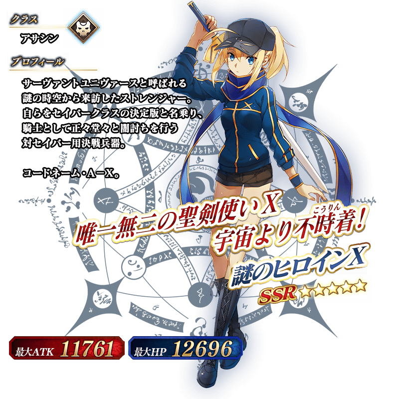